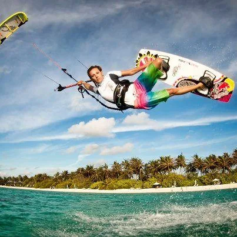

Blog · January 20, 2013
Be More Epic

This new Facebook Page is curated by a small group of people whose minds I love. The guidelines are simple: share whatever strikes you as epic.
On this page you will find an integration of epicness from the world’s best and most obscure sources. We primarily share from RedBull, National Geographic, GoPro and other rad media powerhouses. You’ll also find crazy pics and videos of shit you never knew existed, such as this, this and this.
Like the page and share what strikes you as epic on our wall. If you’re interested in contributing to curation, message me.
First published on my old blog, amyrobinson.wordpress.com, January 20, 2013.